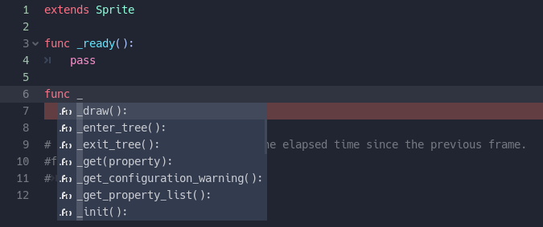

Функция – блок кода выполняющий определённые операции и возвращающий результат выполненных операций. Процедура, в отличии от функции, не возвращает результата выполненных операций, но для удобства её будем так же называть функцией. Типичный пример функции мы видели перед собой всё это время:
func _ready():
pass
Мы можем определить собственные функции, в которые нам необходимо вывести часть логики из основного кода. Например:
func sum(a, b)
return a + b
Аргументы в круглых скобках – это переменные, с которыми мы можем работать в функции помимо тех, которые описаны перед функцией. Контрольное слово return указывает на то, что мы должны вернуть значение, которое стоит, либо высчитывается после контрольного слова. В дальнейшем из основного кода мы можем вызвать функцию подобным образом:
variable = sum(2, 5)
При этом обратите внимание, при вызове функции мы должны в качестве аргументов передать ей столько переменных или значений, сколько содержится в описании функции.
Так же здесь мы можем протестировать область видимости переменных. Так, например, переменная описанная внутри функции принадлежит только этой функции.
Как видим – у нас вывелось Null. Но как же так, ведь мы в другой функции переменной присвоили значение?! Дело в том, что переменная, которую мы инициализируем в функции, принадлежит только этой функции. Таким образом var a и var a = 10 – это разные переменные с разной областью видимости. Однако если в функции убрать контрольное слово var – эта переменная будет взята из глобальных переменных.
Основные типы функций, с которыми мы взаимодействуем – callback функции (функции обратного вызова, обработчики). Функция _ready() как раз является таким обработчиком – когда объект готов к использованию, сцена загружена, этой callback функцией узел реагирует на команду движка о готовности. Так же при создании скрипта мы видим вторую callback функцию:
func _process(delta):
pass
Данная функция вызывается с каждым кадром игры. Если игра воспроизводится в 60fps (frames per second – кадров в секунду). Это означает что данная функция после создания объекта и прохождения колбеков таких как _init() и _ready() вызывается 60 раз в секунду, в соответствии с каждым обработанным кадром экрана.
Таких функций очень много, и, так или иначе они вызываются неявно. Подобным переопределением колбеков мы можем реагировать на события, которые происходят внутри движка, будто это старт сцены, отрисовка, или действие, перехваченное с устройства ввода. Мы имеем возможность их переопределять. Любая функция начинается с контрольного слова func. Если в качестве названия функции первым символом поставить знак подчёркивания, то сниппеты покажут нам функции, которые мы можем переопределить.
Посмотреть все возможные функции мы можем в справке. В строке «extends Sprite» с зажатой клавишей «Ctrl» кликаем на слово «Sprite» – так мы перейдём в справку к разделу отвечающему за этот класс. Помним что узлы описаны иерархически. Так как Sprite не имеет собственных колбеков – он наследует их из Node. В верху справки, в указании пути до данного узла кликнем на узел «Node».
В описании Node скроллим вниз до заголовка «Методы», и теперь мы можем увидеть те методы, которые нам предлагали сниппеты. Те методы, название которых начинается с подчёркивания, вызываются неявно и мы можем их переопределить. Методы которые начинаются без знака подчеркивания так же доступны для определения, но они не являются коллбеками, а значит мы их можем и должны вызывать вручную.
Давайте с вами попробуем отреагировать на какое-либо событие. Например, при клике на наш объект он будет пытаться уехать из-под курсора. Давайте опишем переменную, которая будет отвечать за скорость «убегания». Обратите внимание, в качестве типа данных мы вручную зададим тип Vector2, который отвечает за позиционирование в двумерном пространстве.
var speed: Vector2 = Vector2(0, 0)
func _ready():
pass
func _input(event):
И в ней проверим какие действия сделал пользователь. Нам нужно определить что действие было произведено мышью, и поймать левый клик мыши. А за одно научиться пользоваться встроенной в движок справкой. С зажатой клавишей «Ctrl» кликаем на «Sprite» в первой строке кода, и скроллим справку в самый низ. Видим в конце примеры пользования уникальными функциями класса, и что в описании get_rect() есть шаблон кода отвечающий за определение, что мы кликнули по спрайту левой кнопкой мыши. Выглядит он примерно подобным образом:
func _input(event):
if event is InputEventMouseButton and event.is_pressed() and event.button_index == BUTTON_LEFT:
if get_rect().has_point(to_local(event.position)):
print("A click!")
Изучите этот код, и напишите себе похожий. Теперь нам нужно сделать так, чтобы по клику ему задавалась скорость. Заменим print() на
speed.x = rand_range(-20, 20)
speed.y = rand_range(-20, 20)
Rand_range(начальное значение, конечное значение) отвечает за выбор случайного числа между начальным и конечным значением. Тем самым мы задаём для каждой из координат Vector2(x, y) случайное число от -20 до 20.
Чтобы он бегал – нам необходимо применить к нему эту скорость. Для этого будем изменять его position. Обратите внимание, что position так же относится к типу данных Vector2, а соответственно к каждой из координат мы можем обращаться отдельно. Мы можем ему дать скорость в событии _input(event), но в таком случае он будет бегать только когда происходит клик – это всего один кадр, мгновение. Всё остальное время он будет стоять. Для того чтобы описывать некую логику, например, логику движения – мы должны пользоваться функциями, которые вызываются регулярно. Из таких мы можем использовать _process():
func _process(delta):
position.x += speed.x
position.y += speed.y
Ну и будет некрасиво если мы захотим после клика перед ним извиниться за некрасивое поведение. Мышью в него тыкаем тут, а он убежит за пределы экрана – ему срочно нужен стоп-кран! Как минимум ради того, чтобы он постепенно убегал за экран потому, что мы надоедливы для него. В паре строк этой же функции опишем ему плавную остановку.
speed.x *= 0.9
speed.y *= 0.9
В итоге получаем вот код наподобие этого:
Теперь можем запустить проект, попробовать, и убедиться, что спрайт реагирует, когда мы на него кликаем. Таким образом, мы научились обрабатывать два типа событий – событие по вводу - _input(event), и событие обновления кадра - _process(delta).